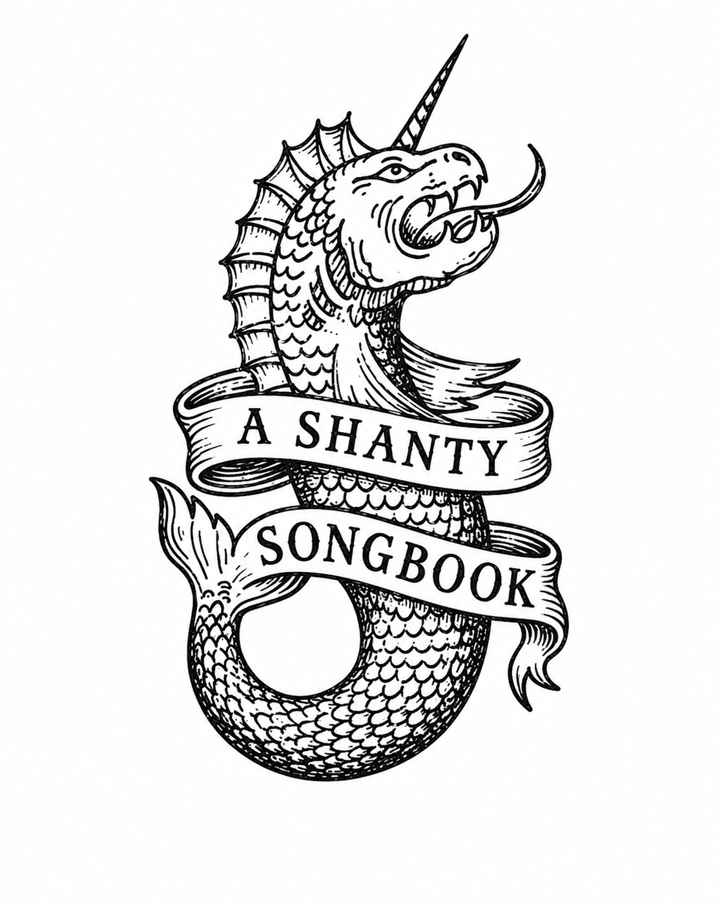

Sea
Shanties
Shanties


EWhiskey is the life of man
Whiskey, Johnny!
DI'll drink whiskey while I Acan
Whiskey for my Johnny Oh!
Oh whiskey straight and whiskey strong,
Whiskey, Johnny!
Give me some whiskey and I'll sing you a song
Whiskey for my Johnny Oh!
Here comes the cook with the whiskey can,
Whiskey, Johnny!
A glass of grog for every man.
Whiskey for my Johnny Oh!
A glass of grog for every man,
Whiskey, Johnny!
And a bottle full for the shantyman.
Whiskey for my Johnny Oh!
---
These shanties are a product of their time,
some may represent regressive views.
This shanty songbook strives to ride the line between
authentic but also not problematic. We did our best.
June 2026, Version 6
CAll for me grog, me jolly jolly Fgrog
CAll for me beer and toGbacco
CFor I spent all me tin down on South Street drinkin Fgin
CAnd across the western ocean I must G7wanCder
Where are me boots, me noggin', noggin' boots,
They're all gone for beer and tobacco
For the heels they are worn out and the toes are kicked about
And the soles are looking out for better weather.
Where is me shirt, me noggin' noggin' shirt
All gone for beer and tobacco
For the collar is wore out and the front is knocked about
And the tail is looking out for better weather
Before the boat had hit the water,
the whale's tail came up and caught her.
All hands to the side, harpooned and fought her,
when she dived down below.
No line was cut, no whale was freed,
The captain's mind was not of greed.
But he belonged to the Whaleman's creed.
She took that ship in tow.
For forty days or even more,
The line went slack then tight once more.
All boats were lost, there were only four,
but still that whale did go.
As far as I've heard, the fight's still on
The line's not cut and the whale's not gone.
The Wellerman makes his regular call
To encourage the captain crew and all.
CmThere once was a ship that put to sea,
the name of the ship was the FmBilly o CmTea.
The winds blew hard, her bow dipped down.
Oh Gblow my bully boys Cmblow.
AbSoon may the EbWellerman come
to Fmbring us sugar and tea and Cmrum
AbOne day the Ebtonguin is done
we'll Gtake our leave and Cmgo
She'd not been two weeks from shore,
when down on her a right whale bore.
The captain called all hands and swore
"We'll take that whale in tow".
I'm sick in the head and I haven't been to bed,
Since first I came ashore from me slumber,
For I spent all me dough on me ladies don't you know
Far across the western ocean I must wander
Stan Rogers, 1976
COh, the year was Fseventeen Gseventy-Ceight
CHow I wish I Fwas in CSherbrooke Gnow!
A Fletter of marque came Gfrom the Cking
To the scummiest vessel I've ever Fseen
God Cdamn Gthem Call!
CI was Ftold we'd Gcruise the Fseas for ACmerican Fgold
We'd Cfire Gno Cguns, shed no Ftears
Now I'm a Cbroken Fman on a CHalifax Fpier
The last of Barrett's G7privaCteers
On the ninety-sixth day we sailed again
How I wish I was in Sherbrooke now!
When a bloody great Yankee hove in sight
With our cracked four-pounders we made to fight
God damn them all!
I shook her up, I shook her down
Heave away, haul away
I shook her round and round the town
We're bound for South Australia
There ain't but one thing grieves my mind
Heave away, haul away
To leave young Nancy Blair behind
We're bound for South Australia
I'm Bristol born and Bristol bred
Heave away, haul away
I'm thick in the arm and thick in the head
We're bound for South Australia
EIn South AusAtralia I was Eborn
Heave away, haul away
EIn South Australia 'round B7Cape EHorn
We're bound for B7South AustralEia
AHaul away, you rolling Ekings
AHeave aEway, Ahaul aEway
AHaul away, oh hear me Esing
We're bound for B7South AustralEia
As I walked out one morning fair
Heave away, haul away
It's there I met Miss Nancy Blair
We're bound for South Australia
Then at length we stood two cables away
How I wish I was in Sherbrooke now!
Our cracked four-pounders made an awful din
But with one fat ball the Yank stove us in
God damn them all!
The Antelope shook and pitched on her side
How I wish I was in Sherbrooke now!
Barrett was smashed like a bowl of eggs
And the main-truck carried off both me legs
God damn them all!
So here I lay in me twenty-third year
How I wish I was in Sherbrooke now!
It's been six long years since we sailed away
And I just made Halifax yesterday
God damn them all!
And it's Crow me bully boys we're in a Fhurry boys
Cwe've got a long way to G7go
And we'll Csing and we'll dance and bid farewell to FFrance
G7row me bully boys Crow
And we sailed away in the roughest of water,
row me bully boys row
But now we return in the most royal quarters,
row me bully boys row
See, now, how we feast on pheasants by a flock,
row me bully boys row
It's a long, long way from the gruel and the stocks,
row me bully boys row
And who can furl the main topsail
Skipper Jan Rebec
All his own in a living gale
Skipper Jan Rebec
And who can drink his weight in beer
Skipper Jan Rebec
And only takes two baths a year
Skipper Jan Rebec
Who sleeps with four folks every night
Skipper Jan Rebec
One up, one down, one left, one right
Skipper Jan Rebec
So who's the king of the fighting Dutch
Skipper Jan Rebec
And who do the sailors fear so much
Skipper Jan Rebec
EbWho's the king of the Bbfighting EbDutch
EbSkipper FJan Rebec
EbAnd who do the sailors Bbfear so much
EbSkipper FJan EbRebec
And it's
EbJa ja leave your hammocks
EbJa ja F *hands on deck*
EbJa ja Bb break your backs for
EbSkipper FJan EbRebec
And who brought all the tea from China
Skipper Jan Rebec
And sold it all in the Carolina
Skipper Jan Rebec
A wee dram of whiskey for every man,
row me bully boys row
And a barrel of rum for the shanty man,
row me bully boys row
And we sailed away in the roughest of water,
row me bully boys row
And now we return and so lock up your daughters,
row me bully boys row
Sally is the girl that I love dearly,
way hey bully in the alley
Sally is the girl that I spliced nearly,
bully down in shinbone al—
GSo help me ba ba bully in the alley,
Cway hey Gbully in the Dalley
GSo help me ba ba bully in the alley,
Cbully down in Gshinbone D7alG—
Seven long years I've courted Sally
way hey bully in the alley
All she did was dilly and dally,
bully down in shinbone al—
Well a nice wash below wouldn't do us any harm.
Well a nice wash below wouldn't do us any harm.
Well a nice wash below wouldn't do us any harm.
And we'll all hang on behind.
Well a night on the town wouldn't do us any harm.
Well a night on the town wouldn't do us any harm.
Well a night on the town wouldn't do us any harm.
And we'll all hang on behind.
Oh a drop of Nelson's blood wouldn't do us any harm.
Oh a drop of Nelson's blood wouldn't do us any harm.
Oh a drop of Nelson's blood wouldn't do us any harm.
And we'll all hang on behind.
We'd be all right if the wind was in our sails.
We'd be all right if the wind was in our sails.
We'd be all right if the wind was in our sails.
And we'll all hang on behind.
DmAnd we'll roll the old chariot along
CWe'll roll the old chariot along
DmWe'll roll the old chariot along
FAnd we'll all Chang on beDmhind
We'll be all right if we make it round The Horn.
We'll be all right if we make it round The Horn.
We'll be all right if we make it round The Horn.
And we'll all hang on behind.
Sally Brown I took a notion
way hey bully in the alley
To sail across this wide damn ocean,
bully down in shin-bone al—
Well I'll leave Sal and I'll go sailin'
way hey bully in the alley
Leave my gal and I'll go whalin',
bully down in shinbone al—
What will we do with a drunken sailor?
What will we do with a drunken sailor?
What will we do with a drunken sailor?
Early in the morning!
DmWay hey and up she rises
CWay hey and up she rises
DmWay hey and up she rises
FEarly in the CmornDming!
Shave his belly with a rusty razor
Shave his belly with a rusty razor
Shave his belly with a rusty razor
Early in the morning!
Heave away, bullies, ye parish rigged bums
Way hey roll and go
Take your hands from your pockets and don't suck your thumbs
To me rollickin' randy dandy O
We're outward bound for Vallipo Bay
Way hey roll and go
Get crackin', me lads, it's a hell of a way!
To me rollickin' randy dandy O
Soon we'll be warping her out through the locks
Way hey roll and go
Where the pretty young girls all come down in their frocks
To me rollickin' randy dandy O
Come breast the bar bullies heave with a will
Way hey roll and go
Oh soon we'll be rolling her down through the bay
To me rollickin' randy dandy O
EbHeave a pawl oh heave a way
BbWay hey roll and go
EbThe anchor's on board and the cable's all Bbstored
EbTo me rollickin' Cmrandy dandy O
Now we are ready to sail for the Horn
Way hey roll and go
Our boots an' our clothes, boys, are all in the pawn
To me rollickin' randy dandy O
Man the stout caps'n and heave with a will
Way hey roll and go
For soon we'll be drivin' away up the hill
To me rollickin' randy dandy O
Put him in a long boat till he's sober
Put him in a long boat till he's sober
Put him in a long boat till he's sober
Early in the morning!
Stick him in a scupper with a hose-pipe on 'im
Stick him in a scupper with a hose-pipe on 'im
Stick him in a scupper with a hose-pipe on 'im
Early in the morning!
That's what we do with a drunken sailor
That's what we do with a drunken sailor
That's what we do with a drunken sailor
Early in the morning!
Kind friends and companions, come join me in rhyme
Come lift up your voices in chorus with mine
Come lift up your voices all grief to refrain
For we may or might never all meet here again
AmHere's a health to the Emcompany and Gone to my Amlass
AmLet us drink and be Cmerry all Amout of one Gglass
AmLet us drink and be Cmerry all Amgrief to reGfrain
AmFor we may or might Emnever all Gmeet here aAmgain
Once more we sail the Northerly gale, towards our island home
Our whaling done, our mainmast sprung, and we ain't got far to roam
Our stuns'l bones is carried away, what care we for that sound?
A living gale is after us, thank God we're homeward bound
How soft the breeze through the island trees, now the ice is far astern
Them native maids, them tropical glades, is awaiting our return
Even now their big brown eyes look out, hoping some fine day to see
Our baggy sails running 'fore the gales, rolling down to old Maui
It's a Emdamn tough Blife full of Gtoil and Dstrife, we Emwhalermen BunderEmgo
And we Emdon't give a Bdamn when the Ggale is Ddone, how Emhard the Bwinds did Emblow
For we're Ghomeward bound from the DArctic ground, with a Emgood ship taut and Bfree
And we Emdon't give a Bdamn when we Gdrink our Drum, with the Emgirls of Bold MauEmi
EmRolling Gdown to old MauDi, me boys
Rolling Emdown to old MauBi
We're Emhomeward Bbound from the GArctic Dground
Rolling Emdown to Bold MauEmi
Once more we sail with a Northerly gale, through the ice and wind and rain
Them coconut fronds, the tropical shores, we soon shall see again
For six hellish months we passed away on the cold Kamchatka sea
But now we're bound from the Arctic ground, rolling down to old Maui
Here's a health to the dear lass that I love so well
For her style and her beauty, sure none can excel
There's a smile on her countenance as she sits on my knee
There's no man in this wide world as happy as me
Our ship lies at anchor, she's ready to dock
I wish her safe landing, without any shock
If ever I should meet you by land or by sea
I will always remember your kindness to me
The Dreadnoughts, 2019
From France we get the Brandy, from Martinique the rum
Sweet red Cabernet from Italy does come
But the fairest of them all, me boys, the one to beat the day
…is made from apples up the mighty Saguenay.
DmSo follow me lads… cause this Amain't no grog or ale
DmOne pint down you'll be Cswinging in the gale
DmFive pints bully you'll be Cshaking in your Fshoes
Dm…We're half-seas C7over on the DmJoli Rouge.
Wives are waiting by the pier head
Gazing seaward from the heather
Bring her round, boys, then we'll anchor
'Ere the sun sets on Mingulay
Ships return now, heavy laden
Mothers holdin' bairns a-cryin'
They'll return yet when the sun sets
Sailing homeward to Mingulay
DHeave her ho, boys, Glet her go, boys
Swing her head Dround into the Cweather
DHeave her ho, boys, Glet her go, boys
Sailing Dhomeward to MinguGlay
What care we, though, white the Minch is?
What care we, boys, for windy weather
When we know that every inch is
Sailing homeward to Mingulay
She's called the Dreadnought Cider, she's proper and she's fine
And when the day is over sure I wish that she were mine
Or in the dark of winter, or on a summer's eve
…One hand giveth and the other does receive.
So turn your sails over and bring her hard to port
Find that little star and fly straight into the North
The wild sun upon your back the wind a-blowing free
…You're rolling up the river boys to old Chicoutimi.
So you can have a Magners and pour it over ice
Or you can have a Strongbow if it's sadness that you like
Or join us up the river and we'll set your heart aglow
…And how you'll feel when the real cider starts to flow.
GLeave her Johnny Cleave her
Oh Fleave her Johnny Cleave her
For the Fvoyage is Clong and the Gwinds don't Cblow
CAnd it's time for us to G7leave Cher
I thought I heard the old man say
Leave her Johnny leave her
Tomorrow ye will get yer pay
And it's time for us to leave her
Oh the wind was foul and the sea was high
Leave her Johnny leave her
She shipped it green and none went by
And it's time for us to leave her
I hate to sail on this rotten tub
Leave her Johnny leave her
No grog allowed and rotten grub
And it's time for us to leave her
We swear by rote for want of more
Leave her Johnny leave her
But now we're through so we'll go on shore
And it's time for us to leave her